Твоя музыка — на скорости Your media, accelerated
Архитектура подключаемых источников: локальные файлы, SoundCloud и Яндекс Музыка работают одинаково, новый источник — это один интерфейс. A pluggable-source architecture: local files, SoundCloud and Yandex Music behave identically, and a new source is just one interface.
Скан папок, чтение тегов и обложек, отдача через собственный протокол media://.Folder scanning, tag & cover reading, served via a custom media:// protocol.
Поиск треков и артистов, стрим (progressive + HLS), вход в аккаунт, персональные миксы и лайки.Track & artist search, streaming (progressive + HLS), account login, personal mixes and likes.
Третий источник: вход своим аккаунтом и полные треки по подписке Яндекс Плюс. Работает в России без VPN.A third source: log in with your account and stream full tracks via a Yandex Plus subscription. Works in Russia without a VPN.
Бесконечный персональный поток Яндекс Музыки прямо на главной — подстраивается под то, что вы слушаете.An endless personal Yandex Music stream right on Home — it adapts to what you listen to.
Web Audio BiquadFilter, 7 пресетов (Flat, Bass, Vocal, Electronic…) — для файлов и SoundCloud.Web Audio BiquadFilter, 7 presets (Flat, Bass, Vocal, Electronic…) — for files and SoundCloud.
Синхронные тексты LRCLIB + фолбэк Genius, ручная синхронизация, караоке в полноэкранном плеере.Synced lyrics via LRCLIB + Genius fallback, manual sync, karaoke in the fullscreen player.
Когда очередь кончается, плеер сам находит похожие треки и продолжает играть без остановки.When the queue runs out, the player finds similar tracks and keeps playing non-stop.
Скачанные треки играют без интернета — вкладка «Скачанное» в сайдбаре.Downloaded tracks play without internet — a “Downloaded” tab in the sidebar.
Помните фрагмент песни? Введите строчку → Genius находит трек → он ищется на SoundCloud.Remember a line? Type it → Genius finds the song → it’s resolved on SoundCloud.
Обложка, визуализатор и всплывающие комментарии по таймкодам — как на оригинальном сайте.Cover art, visualizer and timecoded floating comments — just like the original site.
Название трека и обложка прямо в профиле Discord, пока играет музыка.Track title and cover art right in your Discord profile while music plays.
Визуализатор, кастомные обои и акценты, тёмная тема, своя рамка окна. Два языка интерфейса.Visualizer, custom wallpapers & accents, dark theme, custom window frame. Two UI languages.
Тёмная тема, настраиваемый акцент (на скриншотах — голубая палитра), реактивный визуализатор и кастомные обложки с фоном. Кликните, чтобы увеличить.Dark theme, a customizable accent (the shots use the cyan palette), a reactive visualizer and custom covers & backgrounds. Click to enlarge.
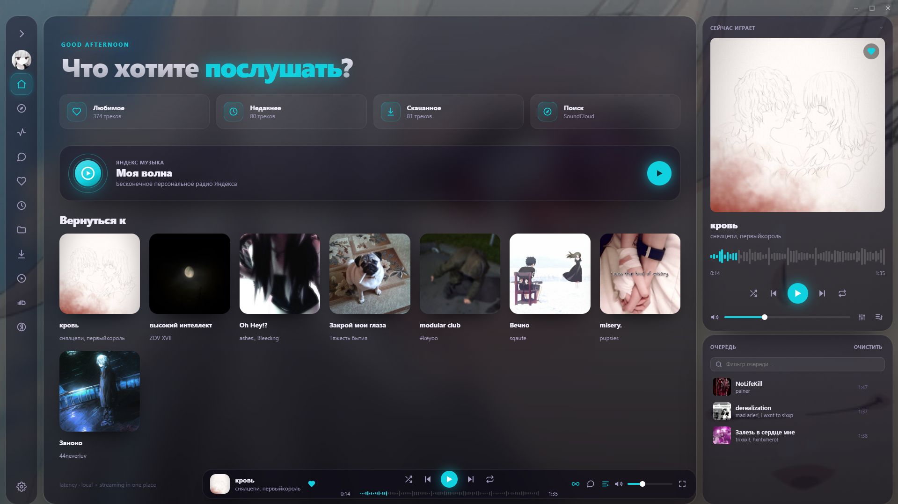
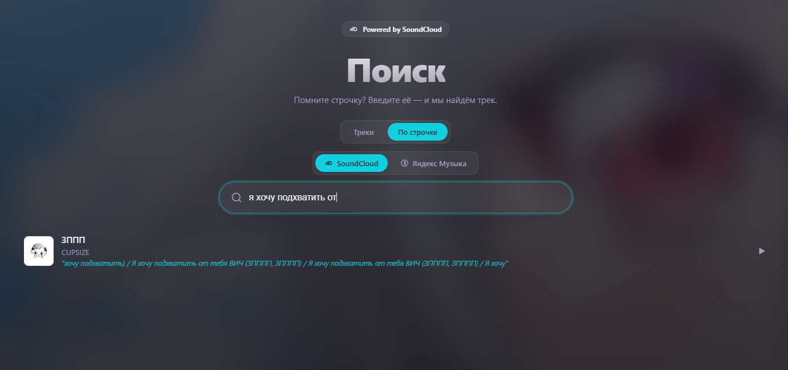
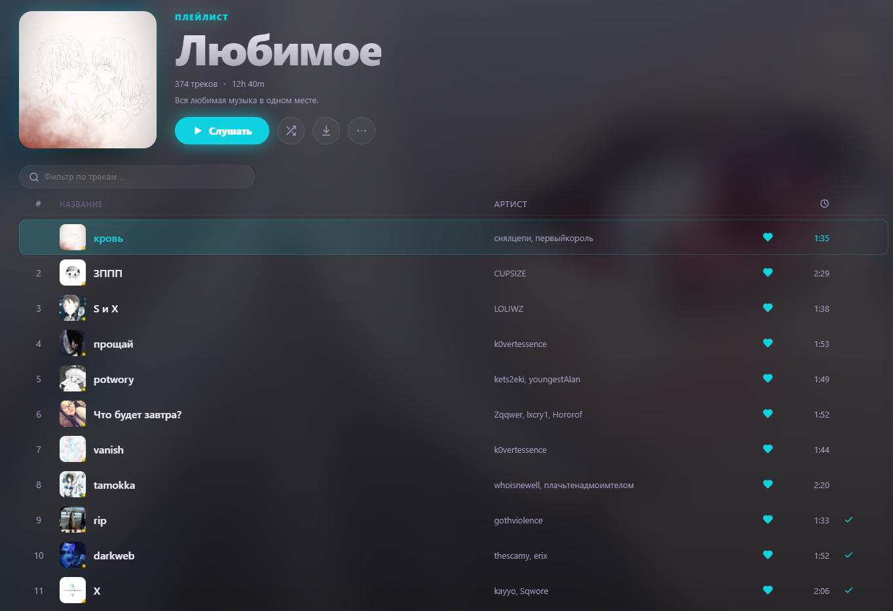
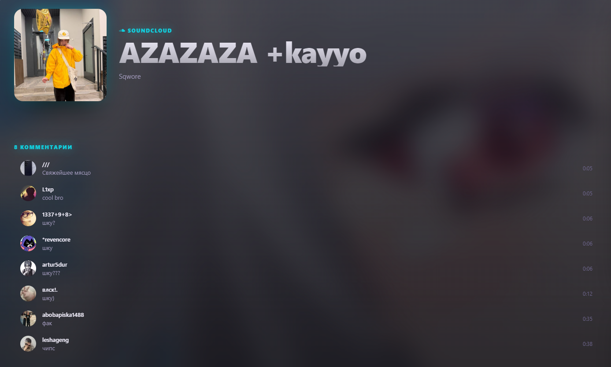
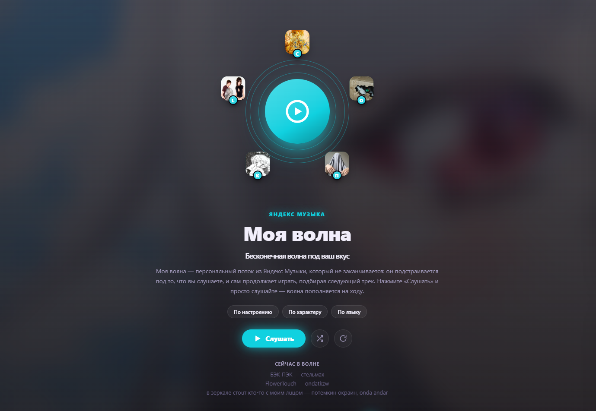
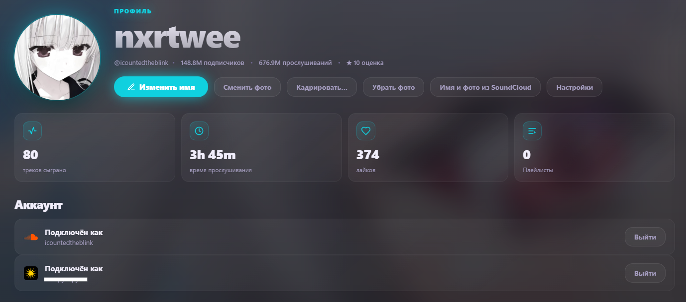
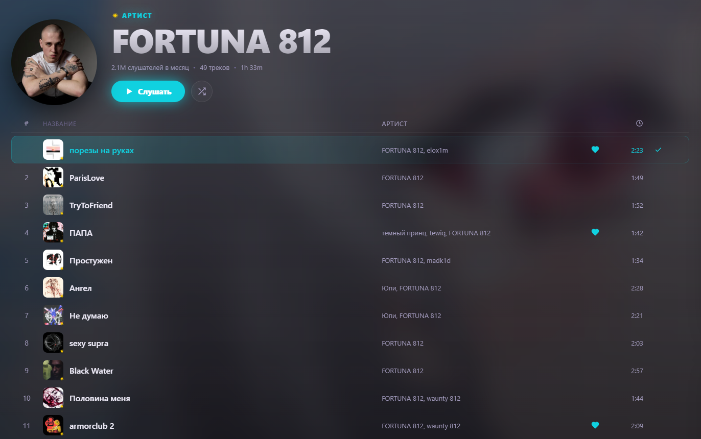
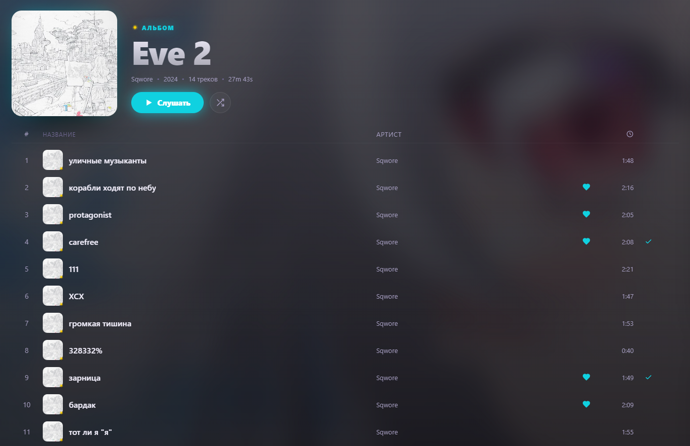
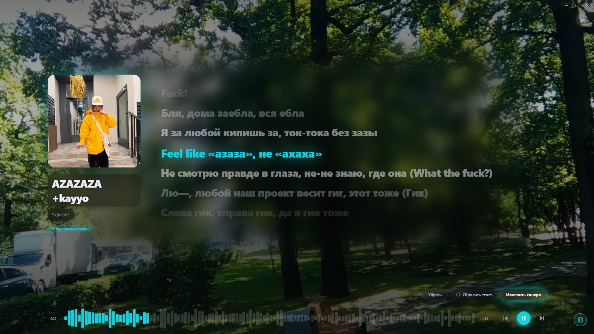
Тот же плеер на iOS и Android — порт на Capacitor с фоновым воспроизведением и медиа-уведомлением. Эталонный опыт всё же на десктопе.The same player on iOS and Android — a Capacitor port with background playback and a media notification. The reference experience is still on desktop.
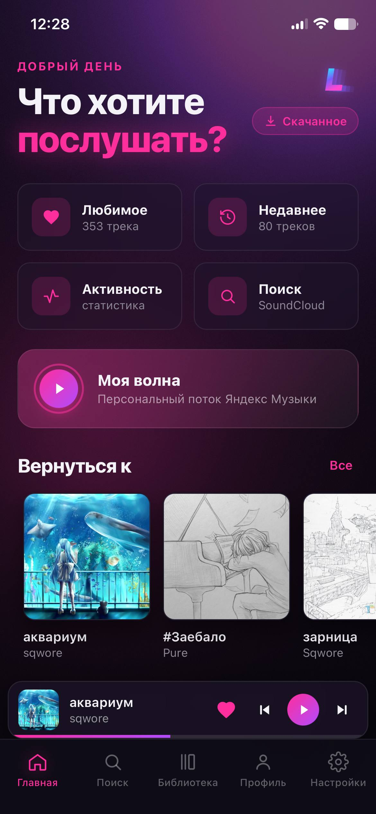
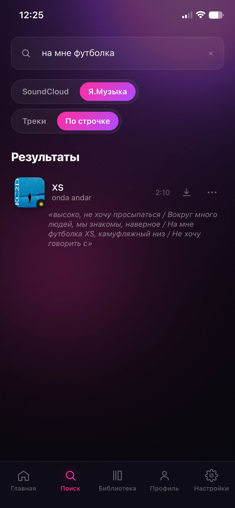
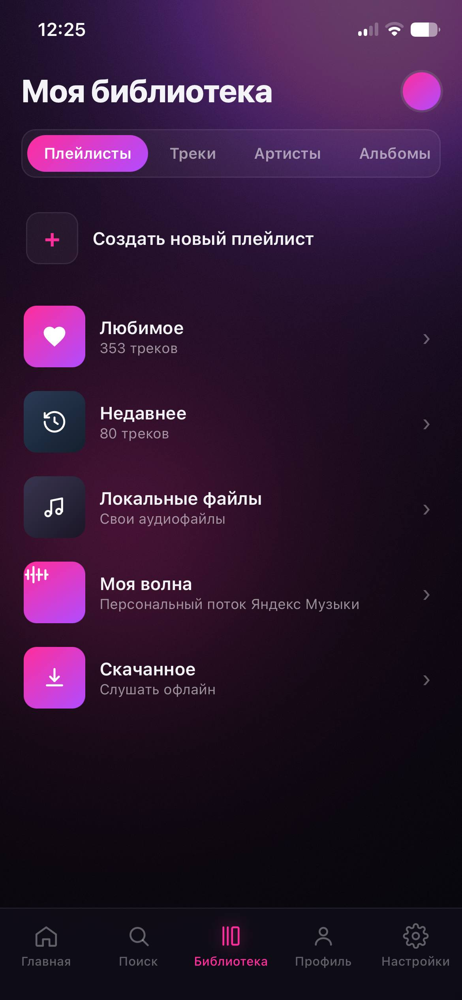
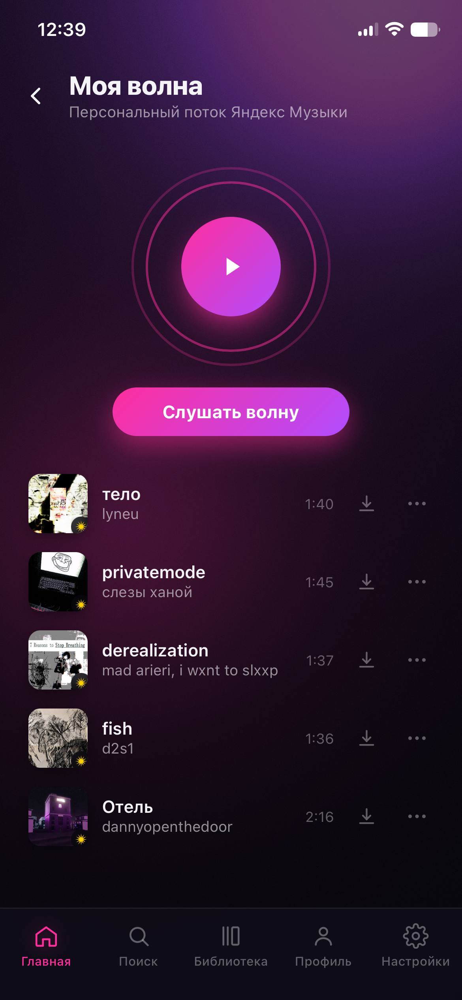
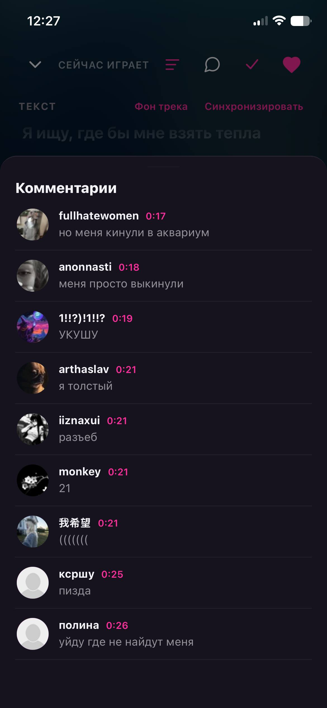
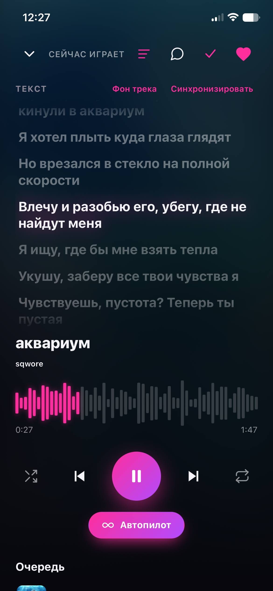
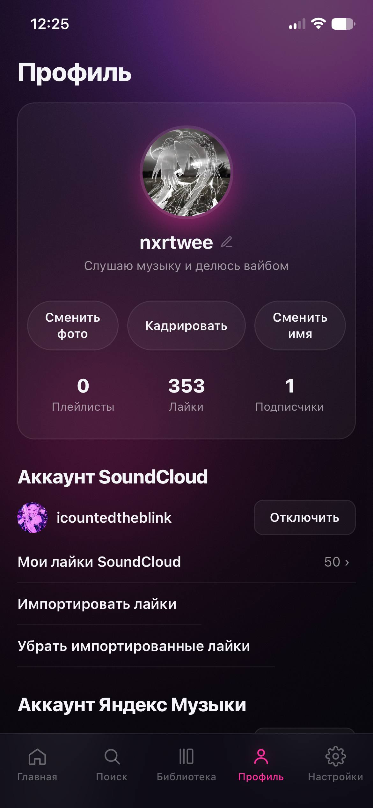
Нажмите на экран, чтобы увеличитьClick a screen to enlarge
Готовые сборки публикуются на GitHub Releases. Текущая версия — 1.0.0.Prebuilt binaries are published on GitHub Releases. Current version — 1.0.0.
Latency-1.0.0-x64.exe — установщик (NSIS)installer (NSIS)Latency-1.0.0-portable.exe — портативная версияportable buildLatency.apkLatency-unsigned.ipaLatency написан чистым вайбкодингом — icountedtheblink и Claude. Лицензия MIT: смотрите код, собирайте сами, добавляйте свои источники.Latency is pure vibe-coding — icountedtheblink and Claude. MIT licensed: read the code, build it yourself, add your own sources.